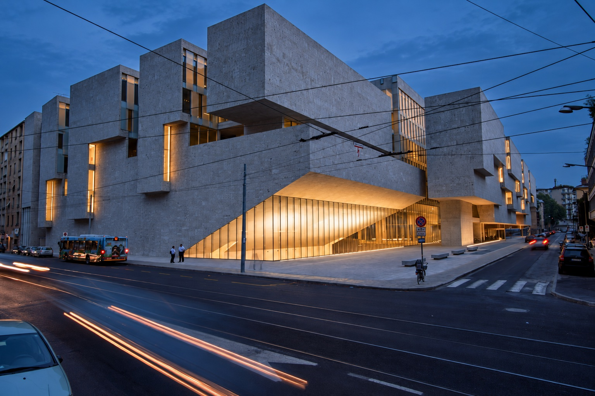

Choose a floor and a landmark. Select stairs or a lift to find the same core on another floor.
Map preview
Main Hall = Aula Magna, Level −1. Rooms 1, 2 and 3 = AS01, AS02 and AS03, Level −2. The arrival entrance and registration point are still being confirmed.
Main Hall (Aula Magna) · foyer · floor connections
Röntgen building
Scroll to explore the floor · Whole floor shows the overview.
Floor overview
Main Hall (Aula Magna) opens onto the foyer on the left. The side stair towards Ground, compact foyer stairs and stair beside the toilets are separate connections.
Scroll to explore the floor · Whole floor shows the overview.
1–5 = AS01–AS05 · Zoom in for full room names.
Floor overview
AS05 and AS04 sit above the broad central stair; AS03, AS02 and AS01 run from top to bottom on the right. The foyer core and stair beside the toilets connect with the floor above.
Simplified orientation plans · Same orientation on every floor · Highlighted places are selections, not live positions.

Röntgen 1, seen from Viale Bligny. Image: Bocconi campus exhibition.
The Röntgen building
Designed by Grafton Architects’ Yvonne Farrell and Shelley McNamara, the building opened in 2008 and received the World Building of the Year award that same year.
Its sculptural stone volumes, light-filled spaces and landmark Aula Magna connect university life with the city.
The conference has no affiliation with these hotels; they are listed solely for their proximity to the venue. Walking distances and times are approximate. Check Google Maps for current directions.